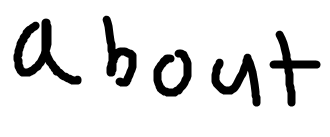
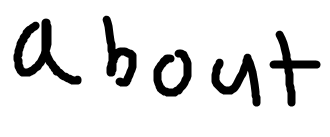

Photography Toolkit
Satellite imagery decoder for GEOSCAN
Satellite imagery decoder for GEOSCAN (sorry again)
A not-so-good decoder for HRPT in Python (wip)
UmKa-1 satellite decoder
RC-1 decoder
SSDV over FLDIGI
A horrible way of processing imagery
Predict GAC groundstation passes (Ha, NOAA Ground Station Commanders!)
APT_COLOR
OS-42 Tracker